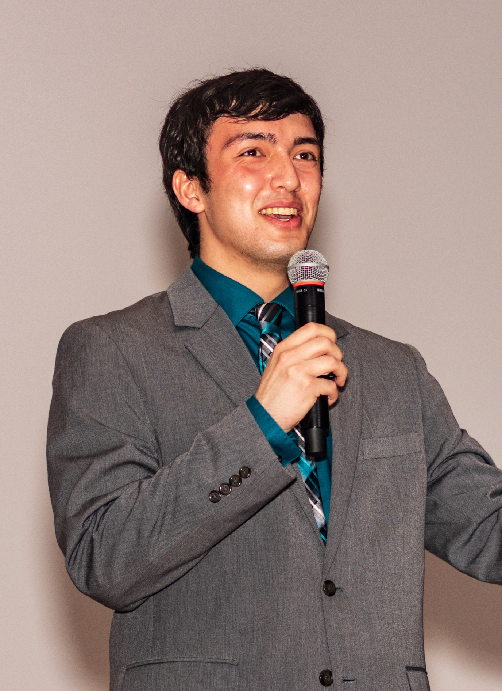

Biography

I am a visual media creator and senior undergraduate at Northwestern University, where I am double majoring in Mathematics and Radio/Television/Film with a minor in Computer Science. My projects focus on the intersection of technology, science, and entertainment, with particular interest in digital media, web content, animation, game design, and Virtual/Augmented Reality.
Outside of this work, I am a fourth year member of the Northwestern University "Wildcat" Marching Band (NUMB) in which I serve as a trombone section leader. Other hobbies include bike riding and TTRPGs.
View ResumeContact Me:
jonathandavid2021@u.northwestern.edu
(651) 233-0247